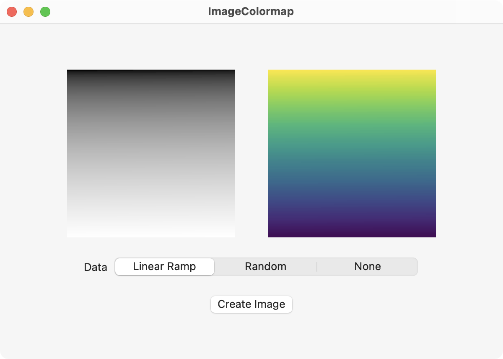
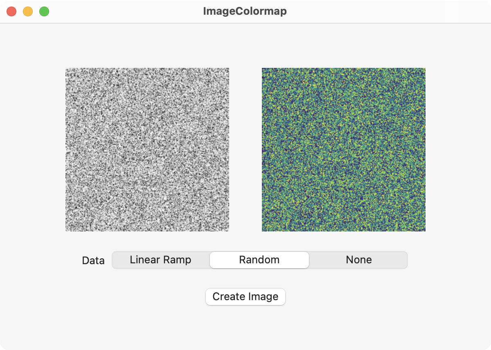

This SwiftUI example demonstrates creating a gray scale image from numerical data. Data is provided as a linear ramp from 0 to 1 (see top image) or as random numbers in the range of 0 to 1 (see bottom image). A colormap filter applies color to the gray scale image using RGB values from the viridis colormap.


The SwiftUI views are constructed as shown below.
import SwiftUI
struct DataImageView: View {
@Binding var data: [Float]
var body: some View {
HStack(spacing: 40) {
if data.count > 1 {
let grayImage = makeGrayImage(from: data, width: 200, height: 200)
let viridisImage = makeViridisImage()
let colormapImage = makeColormapImage(image: grayImage, gradient: viridisImage)
Image(grayImage, scale: 1.0, label: Text("gray image"))
.frame(width: 200, height: 200)
Image(colormapImage, scale: 1.0, label: Text("colormap image"))
.frame(width: 200, height: 200)
} else {
Image(systemName: "photo")
.frame(width: 200, height: 200)
.border(.gray)
Image(systemName: "photo")
.frame(width: 200, height: 200)
.border(.gray)
}
}
.padding(.bottom)
}
}
struct ContentView: View {
@State private var selectedData: DataType = .none
@State private var data: [Float] = [0.0]
var body: some View {
VStack {
DataImageView(data: $data)
Picker("Data", selection: $selectedData) {
Text("Linear Ramp").tag(DataType.linear)
Text("Random").tag(DataType.random)
Text("None").tag(DataType.none)
}
.pickerStyle(.segmented)
.frame(width: 400)
.padding(.bottom)
Button("Create Image") {
switch selectedData {
case .linear:
data = linearData(width: 200, height: 200)
case .random:
data = randomData(width: 200, height: 200)
case .none:
data = [0.0]
}
}
}
.padding()
.frame(minWidth: 600, minHeight: 400)
}
}
The functions that create the data used for the gray scale image are given here.
import Accelerate
enum DataType {
case linear
case random
case none
}
func linearData(width: Int, height: Int) -> [Float] {
let data = vDSP.ramp(in: Float.zero...1, count: width * height)
return data
}
func randomData(width: Int, height: Int) -> [Float] {
// Create random data
let n = width * height
var x = [UInt32](repeating: 0, count: n)
arc4random_buf(&x, n * MemoryLayout<UInt32>.size)
// Normalize the data to range 0 to 1 using formula
// f = (s - s_min) / (s_max - s_min)
let data = vDSP.integerToFloatingPoint(x, floatingPointType: Float.self)
let max = data.max()!
let min = data.min()!
let u = vDSP.add(min * -1, data)
let dataNorm = vDSP.divide(u, max - min)
return dataNorm
}
The numerical data is passed to the makeGrayImage() function along with the width and height of the image.
import Accelerate
/// Create a gray scale image from an array using CGContext.
/// - Parameters:
/// - data: Array contains values from 0 to 1. Assume size of array is width x height.
/// - width: Width of the generated image.
/// - height: Height of the generated image.
/// - Returns: A gray scale CGImage.
func makeGrayImage(from data: [Float], width: Int, height: Int) -> CGImage {
// Convert array to gray scale RGB values
// Note gray scale RGB values are all same number such as 255, 255, 255 and 80, 80, 80
let dataGray = vDSP.multiply(255, data)
// Convert array to UInt8
var gray = vDSP.floatingPointToInteger(dataGray, integerType: UInt8.self, rounding: .towardNearestInteger)
// Create image
let colorSpace = CGColorSpace(name: CGColorSpace.linearGray)!
let bitmapInfo = CGImageAlphaInfo.none.rawValue
let context = CGContext(data: &gray,
width: width,
height: height,
bitsPerComponent: 8,
bytesPerRow: width,
space: colorSpace,
bitmapInfo: bitmapInfo)!
let image = context.makeImage()!
return image
}
A gradient image that represents the viridis colormap is created from this makeViridisImage() function.
import CoreGraphics
/// Create a linear gradient image representing the viridis colormap.
/// - Returns: Image of the viridis colormap.
func makeViridisImage() -> CGImage {
// RGB values for viridis colormap
let viridis: [[UInt8]] = [
[253, 231, 37],
[181, 222, 43],
[110, 206, 88],
[53, 183, 121],
[31, 158, 137],
[38, 130, 142],
[49, 104, 142],
[62, 73, 137],
[72, 40, 120],
[68, 1, 84]
]
let viridisColors: [CGColor] = viridis.map { rgb in
let r = CGFloat(rgb[0]) / 255.0
let g = CGFloat(rgb[1]) / 255.0
let b = CGFloat(rgb[2]) / 255.0
return CGColor(srgbRed: r, green: g, blue: b, alpha: 1.0)
}
let colorSpace = CGColorSpace(name: CGColorSpace.sRGB)!
let gradient = CGGradient(colorsSpace: colorSpace,
colors: viridisColors as CFArray,
locations: nil)!
let width = 256
let height = 1
let bitmapInfo = CGImageAlphaInfo.premultipliedLast.rawValue
let context = CGContext(data: nil,
width: width,
height: height,
bitsPerComponent: 8,
bytesPerRow: width * 4,
space: colorSpace,
bitmapInfo: bitmapInfo)!
let start = CGPoint(x: 0, y: 0)
let end = CGPoint(x: width, y: 0)
context.drawLinearGradient(gradient, start: start, end: end, options: [])
let image = context.makeImage()!
return image
}
Finally, the gray scale image and the viridis image (gradient) are provided to the makeColormapImage() function to create the color image from the colormap filter.
import CoreGraphics
import CoreImage
/// Create an image from a colormap filter.
/// - Parameters:
/// - image: Image the colormap is applied to.
/// - gradient: Gradient representing the colormap.
/// - Returns: A colormapped image.
func makeColormapImage(image: CGImage, gradient: CGImage) -> CGImage {
// Convert to CIImage for filter
let inputImage = CIImage(cgImage: image)
let gradientImage = CIImage(cgImage: gradient)
let filter = CIFilter(name: "CIColorMap")!
filter.setValue(inputImage, forKey: kCIInputImageKey)
filter.setValue(gradientImage, forKey: kCIInputGradientImageKey)
let filteredImage = filter.outputImage!
let context = CIContext()
let image = context.createCGImage(filteredImage, from: filteredImage.extent)!
return image
}
Swift Programming for macOS © 2025
Built with Genja by Gavin Wiggins